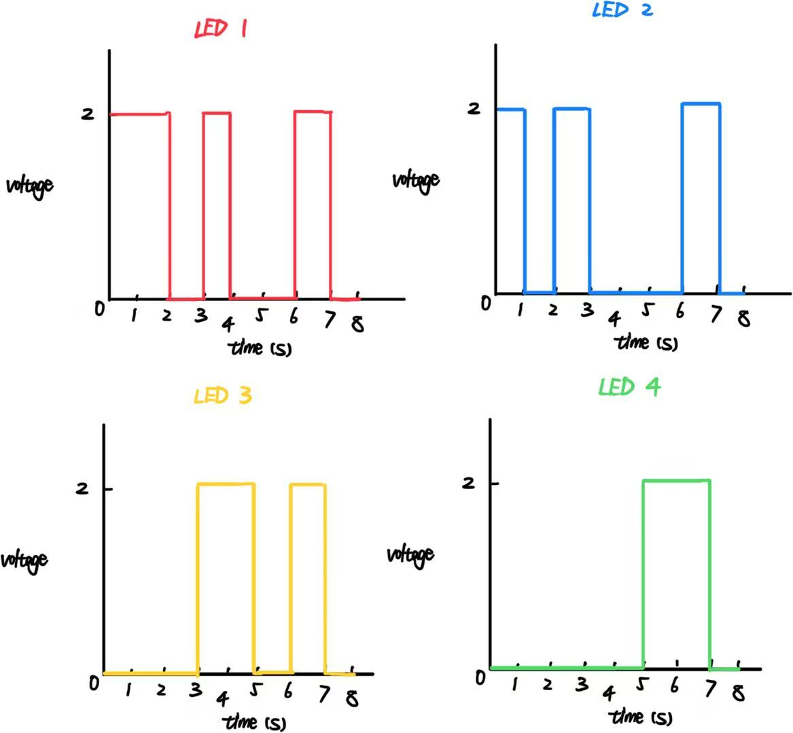

Schematic
Toggle Button Schematic

This schematic shows the wiring for four LEDs connected to the Arduino.
To ensure each of 4 LEDs be able to blink independently, I used parallel circuit.
Fading LED Schematic

With the recommended current of 40 mA for all four colors of LEDs,
I calculated the minimum resistance needed, which is 250 Ohm.
To keep the clarity of the circuit, I used the 330 Ohm's resistants
for each parallel branch.
Normal Blinking LED Schematic

With the recommended current of 40 mA for all four colors of LEDs,
I calculated the minimum resistance needed, which is 250 Ohm.
To keep the clarity of the circuit, I used the 330 Ohm's resistants
for each parallel branch.
Firmware
// Pin definitions for the PUSHBUTTON
// the number of the LED pin
const int ledPin = 13;
// the number of the pushbutton pin
const int buttonPin = 2;
// Pin definitions for the FADING LED (PWM pins)
// Red LED pin
const int redPin = 9;
// Green LED pin
const int greenPin = 10;
// Blue LED pin
const int bluePin = 11;
// Assign the normal LED to its digital pin
int LedNormal = 8;
// Variables (for PUSHBUTTON) will change:
// variable for reading the pushbutton status
int buttonState = 0;
// Previous button state
int lastButtonState = 0;
// Current LED state
int ledState = LOW;
// Variables for Red LED
// Current brightness
int brightness = 0;
// the changing brightness each step
int fadeAmount = 5;
// Variables for Green LED
// Current brightness
int brightness1 = 0;
// the changing brightness each step
int fadeAmount1 = 10;
// Variables for blinking LED
unsigned long previousMillis = 0;
// interval for blinking (1 second)
const long interval = 1000;
// current state of blinking LED
int blinkState = LOW;
void setup() {
// for PUSHBUTTON
// Initialize the LED pin as an output
pinMode(ledPin, OUTPUT);
// Initialize the pushbutton pin as an input
pinMode(buttonPin, INPUT);
// for FADING LEDs
// Initialize the LED pins as outputs
pinMode(redPin, OUTPUT);
pinMode(greenPin, OUTPUT);
pinMode(bluePin, OUTPUT);
// initialize the digital pin as outputs.
pinMode(LedNormal, OUTPUT);
// Start serial communication
Serial.begin(9600);
}
void loop() {
// Read the state of the PUSHBUTTON
buttonState = digitalRead(buttonPin);
// Check if button state changed from LOW to HIGH (button press detected)
if (buttonState == HIGH && lastButtonState == LOW) {
// Toggle the LED state
if (ledState == LOW) {
ledState = HIGH;
Serial.println("Turning LED ON");
} else {
ledState = LOW;
Serial.println("Turning LED OFF");
}
// Update the LED
digitalWrite(ledPin, ledState);
// Simple debounce delay
delay(50);
}
// Save current button state for next loop
lastButtonState = buttonState;
// Blinking LED logic (non-blocking)
unsigned long currentMillis = millis();
if (currentMillis - previousMillis >= interval) {
// save the last time LED blinked
previousMillis = currentMillis;
// if the LED is off turn it on and vice-versa
if (blinkState == LOW) {
blinkState = HIGH;
} else {
blinkState = LOW;
}
// Turn LED 1 ON/OFF
digitalWrite(LedNormal, blinkState);
}
// Set the brightness of red and green FADING LEDs
analogWrite(redPin, brightness);
analogWrite(greenPin, brightness1);
// Blue LED stays off
analogWrite(bluePin, 0);
// Change the brightness for next time through the loop
brightness = brightness + fadeAmount;
brightness1 = brightness1 + fadeAmount1;
// Print out the brightness values
Serial.print("Red: ");
Serial.print(brightness);
Serial.print(" | Green: ");
Serial.println(brightness1);
// Reverse the direction of fading at the ends of the fade
if (brightness <= 0 || brightness >= 255) {
fadeAmount = -fadeAmount;
}
if (brightness1 <= 0 || brightness1 >= 255) {
fadeAmount1 = -fadeAmount1;
}
// Wait for 30 milliseconds to see the dimming effect
delay(30);
}
Question 1

As the LED voltage drop is 2V, while an LED is ON,
the voltage across it stays constant at 2V.
And since this is a parallel circuit, each LED operates independently.
Question 2
The Arduino has 14 pins (0-13), so up to 14 LEDs can be blinked independently.
With the recommended current per pin is 20mA,
14 pins will bring 20*14=280mA.
But since the safe limit of the current for the whole Arduino board is 200mA,
we should limit the current for each branch and make the current draw under 200mA.
Question 3
I don't think there is a delay time that is fast enough to blink LEDs until no longer can tell that they are blinking.
I have tried to adjust the delay time as short as 0.00000000001 ms, but I could still see the blinking.
Question 4
ChatGPT was used to help with content arrangement on the website.
I referenced to the code provided by ChatGPT to arrange the "content block"
for Schematic and Resistance Calculation, to make them side by side
rather than up and down placed.
The CSS code for two-column content from ChatGPT was used.
For reflection, I researched and learnt the defined constent like "align-items"
and "displace." And in the Additional Question section, I tried to write the
code my self to arrange answers to Q1 and Q2 side by side.
I learnt more about the function "div" and "class."
And the codes from ChatGPT was also referenced for the continuing full-width blocks.
I edited and arranged the codes carefully to make the strcutre correct,
which I have moved the full-width-blcok outside the previous content.
And with the graphs attached in a single column, ChatGPT helped me write the codes
to limit the width of specific image.
I also reflected by learning different methods to make images smaller.
And I found out the image will be centered automatically after the size change,
so I used ChatGPT to debug and make the images left-aligned again with CSS codes.
I also used ChatGPT to make the code snippet:
On the HTML, I referred to the codes for adding a firmware section.
I wrote the CSS part myself to make the font smaller and different background color.
And for the Additional Questions,
when answering Question 1, I used ChatGPT to differentiate the difference between
digitalWrite() and analogWrite().
I learnt the concept about PWM-capable pin.
Most importantly, I learnt that even with analogWrite(), the pin is still digital,
so it does not have analog voltage.
But I still need to deepen my understanding towards the digital pins and PWM pins.